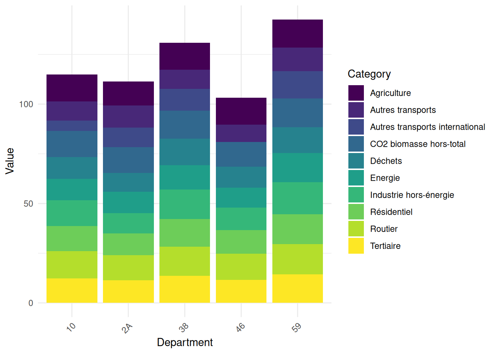

"an explanatory annotation accompanies me on the right"- 1
- I appear when you hover over me 🐭!
In this second tutorial, we will learn to import and manipulate data with .
Some code examples include annotations on the side, hover over them to display them, as shown below
"an explanatory annotation accompanies me on the right"In this chapter, we will mainly use the following packages from the tidyverse:
readr for data import;dplyr for data manipulation.The tidyverse is not the only complete ecosystem for data analysis.
However, for an introduction to , it’s certainly the most reasonable to adopt.
Competing or complementary ecosystems (data.table, arrow, duckdb) already require a good understanding of the tidyverse and its limitations.
In this tutorial, we will use two data sources:
ADEME. The dataset is available on data.gouv and directly queryable in with this url (this will be the subject of the first exercise)1.doremifasol and insee which simplify access to Insee data available on the insee.fr website or via APIs.is an open source language. Anyone can therefore propose code to increase the language’s functionalities. A coherent set of functionalities is called a library or package.
Since the team managing the language doesn’t intend to integrate all libraries into the base language (which should remain, as its name indicates, basic), there are community spaces where people can make their packages available. In the ecosystem, the two main ones2 are:
CRAN (Comprehensive R Archive Network): the official and historical repository of libraries. To install a package stored in this space, use install.package;Github : the social network for open source code. To install a package stored in this space, use remotes::install_github3Generally, packages with certain maturity are on CRAN. Github has a more catch-all aspect where you find gems alongside things of more variable quality.
Some packages we’ll see aren’t on CRAN because the validation procedure to deposit your package there is quite heavy and tiring for volunteer developers, usually unpaid for this work and often doing it at night.
To install a package available on CRAN, for example the dplyr package, you can do:
install.packages("insee")To install a package available on Github , for example doremifasol which is available on the InseeFrLab account’s repository, do:
remotes::install_github('inseefrlab/DoReMIFaSol')Here are all the instructions to install the packages needed to perform all the exercises in this tutorial:
install.packages(c("readr","dplyr", "tidyr", "ggplot2", "remotes"))
remotes::install_github('inseefrlab/DoReMIFaSol')Since we’ll frequently use dplyr, we can import it directly:
library(dplyr)
library(tidyr)
library(stringr)To start, we’ll import Ademe data using the readr package[^readcsv].
readr and observing the data
Here’s the URL where the data is available
url <- "https://koumoul.com/s/data-fair/api/v1/datasets/igt-pouvoir-de-rechauffement-global/convert"readr package to import this data. Name this object emissions4library(readr)
emissions <- read_csv(url)head and observe the display difference with, for example, this dataframe:df <- data.frame(
var1 = 1:10,
var2 = letters[1:10],
var3 = rep(c(TRUE, FALSE), times = 5)
)head(emissions)
head(df)emissions. Do you now understand why this object is slightly different from a base dataframe?class(emissions)dplyr packageread_csv documentation (very well done) or search for examples online to discover this function. ⚠️ Don’t use read.csv (base function) which isn’t performant.
As mentioned in utilitR, the main functions of dplyr (the verbs of the dplyr grammar) are as follows:
select(): select variables by their name;rename(): rename variables;filter(): select observations according to one or more conditions;arrange(): sort the table according to one or more variables;mutate(): add variables that are functions of other variables;summarise(): calculate a statistic from data;group_by(): perform operations by group.dplyr verbsThe following cheatsheet is very practical as it illustrates these different functions. It’s recommended to regularly consult it (click on the image to zoom 🔎):
dplyr verbs for data manipulation
First, let’s familiarize ourselves with operations on columns.
emissions_copy keeping only the columns INSEE commune, Commune, Autres transports and Autres transports international
INSEE commune \(\to\) code_inseeAutres transports \(\to\) transportsAutres transports international \(\to\) transports_international
NA) with the value 05. Use the replace_na function from the tidyr package, in conjunction with mutate, to transform missing values to 0.
dep: the department. This can be created using the first two characters of code_insee with the str_sub function from the stringr package6transports_total: transport sector emissions (sum of the two variables)

group_bysummarise(sum(***))emissions_copy <- emissions %>%
select(`INSEE commune`, `Commune`, `Autres transports`, `Autres transports international`)emissions_copy <- emissions_copy %>%
rename(
code_insee = `INSEE commune`,
transports = `Autres transports`,
transports_international = `Autres transports international`
)emissions_copy <- emissions_copy %>%
mutate(
transports = replace_na(transports),
transports_international = replace_na(transports_international)
)emissions_copy <- emissions_copy %>%
mutate(
dep = str_sub(code_insee, 1, 2),
transports_total = transports + transports_international
)emissions_copy %>%
arrange(desc(transports_total))
emissions_copy %>%
arrange(dep, desc(transports_total))emissions_copy %>%
group_by(dep) %>%
summarise(sum(transports_total))For our municipal information, we’ll use one of Insee’s most used sources: Filosofi data. To facilitate retrieving these, we’ll use the community package doremifasol:
library(doremifasol)
library(tibble)
filosofi <- as_tibble(
telechargerDonnees("FILOSOFI_COM", date = 2016)
)
head(filosofi)# A tibble: 6 × 29
CODGEO LIBGEO NBMENFISC16 NBPERSMENFISC16 MED16 PIMP16 TP6016 TP60AGE116
<chr> <chr> <dbl> <dbl> <dbl> <dbl> <dbl> <dbl>
1 01001 L'Abergeme… 313 796. 22679 NA NA NA
2 01002 L'Abergeme… 101 248 24382. NA NA NA
3 01004 Ambérieu-e… 6363 14228 19721 49 17 19
4 01005 Ambérieux-… 633 1662. 23378 NA NA NA
5 01006 Ambléon NA NA NA NA NA NA
6 01007 Ambronay 1087 2684 22146. 57 NA NA
# ℹ 21 more variables: TP60AGE216 <dbl>, TP60AGE316 <dbl>, TP60AGE416 <dbl>,
# TP60AGE516 <dbl>, TP60AGE616 <dbl>, TP60TOL116 <dbl>, TP60TOL216 <dbl>,
# PACT16 <dbl>, PTSA16 <dbl>, PCHO16 <dbl>, PBEN16 <dbl>, PPEN16 <dbl>,
# PPAT16 <dbl>, PPSOC16 <dbl>, PPFAM16 <dbl>, PPMINI16 <dbl>, PPLOGT16 <dbl>,
# PIMPOT16 <dbl>, D116 <dbl>, D916 <dbl>, RD16 <dbl>The as_tibble function converts the base dataframe (doremifasol doesn’t make assumptions about the manipulation ecosystem adopted) into a dataframe adapted for use via the tidyverse.
Since readr or doremifasol automatically handled the data import, let’s do a small quality control:
emissions and filosofi. What are the common columns? Use the intersect function and understand the nature of the problem.Then, we verify the dimensions of the DataFrames and the structure of some key variables. In this case, the fundamental variables for linking our data are the municipal variables. Here, we have two geographic variables: a municipality code and a municipality name. We’ll therefore verify they’re well suited for statistical analysis.
filosofi the municipality names that correspond to multiple municipality codes and select their codes. In other words, identify the CODGEO such that there are duplicate LIBGEO and store them in a dataframe duplicatesWe temporarily focus on observations where the label has more than two different municipality codes
filosofi. For better visibility, reorder the obtained base alphabeticallyNBPERSMENFISC16) and some descriptive statistics of this data. Compare to the same statistics on data where labels and municipality codes coincidefilosofi the cities whose label equals Montreuil. Also check those containing the term ‘Saint-Denis’str(emissions)
intersect(colnames(filosofi), colnames(emissions))str(filosofi)
str(emissions)dim(filosofi)
dim(emissions)emissions %>%
select('INSEE commune', 'Commune') %>%
summarize(Unique_Count = n_distinct(Commune))
filosofi %>%
select('CODGEO', 'LIBGEO') %>%
summarize(Unique_Count = n_distinct(LIBGEO))# Question 5
duplicates <- filosofi %>%
group_by(LIBGEO) %>%
summarize(Count = n()) %>%
select(LIBGEO, Count) %>%
#arrange(desc(Count)) %>%
filter(Count > 1)
# Question 6
filosofi %>%
filter(LIBGEO %in% duplicates$LIBGEO) %>%
arrange(LIBGEO)
# Question 7
filosofi %>%
filter(LIBGEO %in% duplicates$LIBGEO) %>%
summarize(Stats = mean(NBPERSMENFISC16, na.rm = TRUE))
# Calculate summary statistics for 'NBPERSMENFISC16' for rows where 'LIBGEO' is not in 'x$LIBGEO'
filosofi %>%
filter(!(LIBGEO %in% duplicates$LIBGEO)) %>%
summarize(Stats = mean(NBPERSMENFISC16, na.rm = TRUE))filosofi_big <- filosofi %>%
filter(NBPERSMENFISC16 > 100000) %>%
mutate(probleme = LIBGEO %in% duplicates$LIBGEO)
# Proportion of problematic cities
mean_probleme <- filosofi_big %>%
summarize(mean(probleme))
# Filter rows where 'probleme' is TRUE
df_probleme <- filosofi_big %>%
filter(probleme)For question 8, you should get this:
head(df_probleme)# A tibble: 4 × 30
CODGEO LIBGEO NBMENFISC16 NBPERSMENFISC16 MED16 PIMP16 TP6016 TP60AGE116
<chr> <chr> <dbl> <dbl> <dbl> <dbl> <dbl> <dbl>
1 93048 Montreuil 43996 108682 18428 55 26 29
2 93066 Saint-Denis 39469 108346. 14622. 39 38 35
3 97411 Saint-Denis 57567 145396. 16317. 35 34 47
4 97415 Saint-Paul 37064 105829 16279. 35 33 42
# ℹ 22 more variables: TP60AGE216 <dbl>, TP60AGE316 <dbl>, TP60AGE416 <dbl>,
# TP60AGE516 <dbl>, TP60AGE616 <dbl>, TP60TOL116 <dbl>, TP60TOL216 <dbl>,
# PACT16 <dbl>, PTSA16 <dbl>, PCHO16 <dbl>, PBEN16 <dbl>, PPEN16 <dbl>,
# PPAT16 <dbl>, PPSOC16 <dbl>, PPFAM16 <dbl>, PPMINI16 <dbl>, PPLOGT16 <dbl>,
# PIMPOT16 <dbl>, D116 <dbl>, D916 <dbl>, RD16 <dbl>, probleme <lgl>While for question 9, your two dataframes will look like
# Question 9
filosofi %>%
filter(LIBGEO == 'Montreuil')# A tibble: 4 × 29
CODGEO LIBGEO NBMENFISC16 NBPERSMENFISC16 MED16 PIMP16 TP6016 TP60AGE116
<chr> <chr> <dbl> <dbl> <dbl> <dbl> <dbl> <dbl>
1 28267 Montreuil 215 503 24823. NA NA NA
2 62588 Montreuil 994 1951 18762 NA NA NA
3 85148 Montreuil 340 884. 19340 NA NA NA
4 93048 Montreuil 43996 108682 18428 55 26 29
# ℹ 21 more variables: TP60AGE216 <dbl>, TP60AGE316 <dbl>, TP60AGE416 <dbl>,
# TP60AGE516 <dbl>, TP60AGE616 <dbl>, TP60TOL116 <dbl>, TP60TOL216 <dbl>,
# PACT16 <dbl>, PTSA16 <dbl>, PCHO16 <dbl>, PBEN16 <dbl>, PPEN16 <dbl>,
# PPAT16 <dbl>, PPSOC16 <dbl>, PPFAM16 <dbl>, PPMINI16 <dbl>, PPLOGT16 <dbl>,
# PIMPOT16 <dbl>, D116 <dbl>, D916 <dbl>, RD16 <dbl># Question 10
filosofi %>%
filter(grepl('Saint-Denis', LIBGEO)) %>%
head(10)# A tibble: 10 × 29
CODGEO LIBGEO NBMENFISC16 NBPERSMENFISC16 MED16 PIMP16 TP6016 TP60AGE116
<chr> <chr> <dbl> <dbl> <dbl> <dbl> <dbl> <dbl>
1 01344 Saint-Den… 2562 6036 23258 63 7 NA
2 01345 Saint-Den… 965 2280 21464 53 NA NA
3 02818 Villiers-… 365 901 22221 NA NA NA
4 11339 Saint-Den… 224 474. 18477. NA NA NA
5 14571 Saint-Den… 124 298. 20860. NA NA NA
6 14572 Saint-Den… 331 770. 20080 NA NA NA
7 17323 Saint-Den… 733 1401 21364. NA NA NA
8 18204 Saint-Den… 125 314. 21446. NA NA NA
9 21442 Morey-Sai… 285 664. 25946. NA NA NA
10 25129 Chassagne… 50 116 21357. NA NA NA
# ℹ 21 more variables: TP60AGE216 <dbl>, TP60AGE316 <dbl>, TP60AGE416 <dbl>,
# TP60AGE516 <dbl>, TP60AGE616 <dbl>, TP60TOL116 <dbl>, TP60TOL216 <dbl>,
# PACT16 <dbl>, PTSA16 <dbl>, PCHO16 <dbl>, PBEN16 <dbl>, PPEN16 <dbl>,
# PPAT16 <dbl>, PPSOC16 <dbl>, PPFAM16 <dbl>, PPMINI16 <dbl>, PPLOGT16 <dbl>,
# PIMPOT16 <dbl>, D116 <dbl>, D916 <dbl>, RD16 <dbl>This small exercise is reassuring because the duplicate labels are actually identical municipality names that aren’t in the same department. These aren’t duplicate observations. We’ll therefore rely on municipality codes, which are unique.
Let’s start data exploration. This involves some data cleaning beforehand.
INSEE commune to code_insee7.dep in emissions and in filosofi using the str_sub function from the stringr package8.Let’s start calculating our first descriptive statistics.
Calculate total emissions by sector for each department. Log-transform these results in an object emissions_log. Figure 2 illustrates the structure of these emissions for 5 random departments.
Start from the emissions dataset. Calculate total emissions by department and output the list of the top 10 CO2 emitters and the 5 lowest-emitting departments. Without doing a merge, look at the characteristics of these departments (population and standard of living)
library(stringr)
emissions <- emissions %>%
rename('code_insee' = `INSEE commune`)emissions <- emissions %>%
mutate(dep = str_sub(code_insee, start = 1, end = 2))
filosofi <- filosofi %>%
mutate(dep = str_sub(CODGEO, start = 1, end = 2))emissions_log <- emissions %>%
group_by(dep) %>%
summarise(across(where(is.numeric), sum, na.rm = TRUE)) %>%
mutate(across(where(is.numeric), log))## Total emissions by department
emissions_dep <- emissions %>%
mutate(total = rowSums(pick(where(is.numeric)), na.rm = TRUE)) %>%
group_by(dep) %>%
summarise(total = sum(total))
gros_emetteurs <- emissions_dep %>%
arrange(desc(total)) %>%
head(10)
petits_emetteurs <- emissions_dep %>%
arrange(total) %>%
head(5)
## Characteristics of these departments in filosofi
gros_emetteurs_filosofi <- filosofi %>%
filter(dep %in% gros_emetteurs$dep) %>%
group_by(dep) %>%
summarise(across(c('NBPERSMENFISC16','MED16'), \(x) mean(x, na.rm = TRUE)))
head(gros_emetteurs_filosofi)library(tidyr)
library(ggplot2)
emissions_log_sample <- emissions_log %>%
filter(dep %in% sample(unique(dep),5))
emissions_log_sample <- emissions_log_sample %>%
pivot_longer(cols = -dep, names_to = "Category", values_to = "Value")
ggplot(emissions_log_sample, aes(x = dep, y = Value, fill = Category)) +
geom_bar(stat = "identity") +
labs(x = "Department", y = "Value") +
theme_minimal() +
theme(axis.text.x = element_text(angle = 45, hjust = 1)) + scale_fill_viridis_d()Warning: Removed 2 rows containing missing values or values outside the scale range
(`geom_bar()`).
str_sub
library(stringr)
df %>% mutate(x = str_sub(y, start = 3, end = 5))Two types of data are generally presented:
An example of the distinction between the two can be taken from Hadley Wickham’s reference work, R for Data Science:

We often need to restructure data with to lengthen them (wide to long) and widen them (long to wide). The tidyr package (which belongs to the tidyverse) allows these types of transformations.
The following cheat sheet will help remember which functions to apply if needed:

Going from wide to long format (or vice-versa) can be extremely practical because certain functions are more suitable for one data form or another.
Generally, long formats are often preferable because it’s easier to iterate over rows than columns due to ’s vectorial nature. This is particularly the preferred data form for preparing graphs with ggplot, which we’ll discover in the next chapter.
library(tidyr)
df_long <- emissions %>%
pivot_longer(cols = -c(code_insee, Commune, dep),
names_to = "secteur",
values_to = "emissions")df_long_summary <- df_long %>%
group_by(secteur) %>% summarise(emissions = sum(emissions, na.rm = TRUE))Once the df_long_summary dataframe is created, the minimal code to create the desired barplot is:
ggplot(df_long_summary) +
geom_bar(
aes(y = secteur, x = emissions),
stat ='identity'
)
No need to go further for now, we’ll do more ggplot later.
df_long_dep <- df_long %>%
group_by(secteur, dep) %>%
summarise(emissions = sum(emissions, na.rm = TRUE)) %>%
arrange(desc(dep), desc(emissions)) %>%
group_by(dep) %>%
slice_head(n = 1)# A tibble: 6 × 3
# Groups: dep [6]
secteur dep emissions
<chr> <chr> <dbl>
1 Routier 01 1635350.
2 Routier 02 1386403.
3 Agriculture 03 1949985.
4 Routier 04 390568.
5 Routier 05 345859.
6 Routier 06 1561664.TO DO
Information we seek is increasingly obtained from multiple data sources rather than a single database. It’s becoming common to need to combine data from different sources.
We’ll focus here on the most favorable case which is when information allows exact matching of two databases (otherwise we’d be in a much more complex situation of fuzzy matching). The typical situation is matching between two data sources using an individual identifier or municipality code identifier, which is our case.
It’s recommended to read this fairly complete guide on joins with which also gives useful recommendations for Python .
In common statistical language, the terms merge or join are used interchangeably. The second term comes from SQL syntax and is the one rather used when coding with dplyr.
dplyr

First, we’ll calculate each municipality’s carbon footprint.
emissions <- emissions %>%
mutate(total = rowSums(pick(where(is.numeric)), na.rm = TRUE))At this stage we might want to move toward modeling to try to explain carbon footprint determinants from municipal variables. However, an inferential approach requires checking descriptive statistics beforehand to be relevant.
ggplot(emissions_merged) +
geom_histogram(aes(x = empreinte, y = after_stat(density))) +
scale_x_log10()With better understanding of our data, we’re approaching inferential statistics. However, we’ve so far built univariate statistics but haven’t sought to understand results by looking at the link with other variables. This brings us to bivariate statistics, particularly correlation analysis. This work is important since any subsequent modeling will consist of refining correlation analysis to account for cross-correlations between multiple factors. We propose here to do this analysis in a minimal way.
emissions <- emissions %>%
mutate(total = rowSums(pick(where(is.numeric)), na.rm = TRUE))emissions_merged <- emissions %>%
left_join(filosofi, by = c("code_insee" = "CODGEO"))emissions_merged <- emissions_merged %>%
mutate(empreinte = total/NBPERSMENFISC16)ggplot(emissions_merged) +
geom_histogram(aes(x = empreinte, y = after_stat(density))) +
scale_x_log10()emissions_merged <- emissions_merged %>%
rename(departement = dep.x) %>%
group_by(departement) %>%
mutate(empreinte_mediane = median(empreinte, na.rm = TRUE)) %>%
mutate(empreinte_relative = empreinte/empreinte_mediane)
emissions_merged %>% arrange(empreinte_relative)library(tibble)
correlations <- cor(
emissions_merged %>% ungroup() %>% select(where(is.numeric)),
use="complete.obs"
)[,'empreinte']
correlations <- enframe(correlations) %>%
filter(name %in% colnames(filosofi)) %>%
arrange(desc(abs(value)))Here’s a quick visualization of correlations with carbon footprint:
ggplot(correlations) + geom_bar(aes(x = value, y = name), stat = "identity") +
scale_y_discrete(limits = correlations$name) 
readr offers the possibility to import data directly from a url. This is the option taken in this tutorial. If you prefer, for network access or performance reasons, to import from a local machine, you can download the data and change the import commands with the appropriate path instead of the url.↩︎
There’s also bioconductor but since it’s mainly oriented towards biostatistics (one of the academic communities that adopted earliest), we don’t really use it↩︎
remotes::install_github means to use the install_github function from the package remotes. In other words, you need a package to install other packages 🤯. This is because Github didn’t exist when was created (1990s) and this functionality hasn’t been added since.↩︎
For lack of imagination, we’re often tempted to call our main dataframe df or data. This is often a bad idea since this name isn’t very informative when rereading the code a few weeks later. Self-documentation, an approach that consists of having code that explains itself, is a good practice and it’s therefore recommended to give a simple but effective name to know the nature of the dataset in question.↩︎
This assumption is certainly false. It’s exclusively here to illustrate variable creation via mutate.↩︎
To be really precise, we would need to modify the values obtained for Corsican departments with the case_when function from the dplyr package. This is left as an additional exercise.↩︎
The space in the variable name is annoying. To be able to use this variable’s name in rename, we’ll need to use backticks, i.e., INSEE commune.↩︎
The limited functionalities of the base language for text manipulation quickly become constraining. We thus quickly move to stringr even though it’s not the main subject of the chapter.↩︎
you can directly use the helper code snippet if you’re not familiar with ggplot↩︎
Ideally, we should ensure this join doesn’t introduce bias. Indeed, since our reference years aren’t necessarily identical, there may be a mismatch between our two sources. Since the tutorial is already long, we won’t go down this path. Interested readers can perform such an analysis as an additional exercise.↩︎